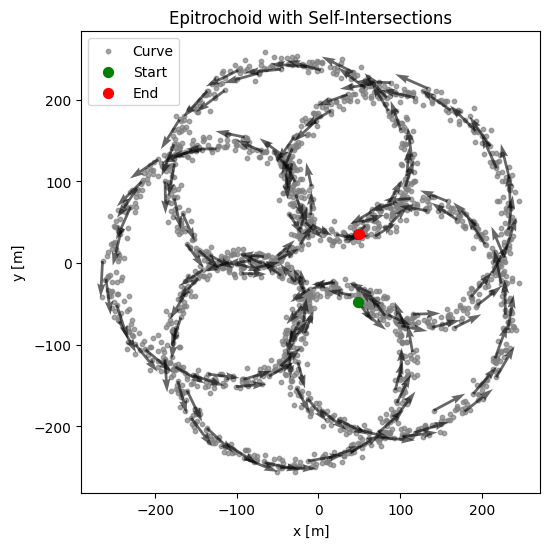
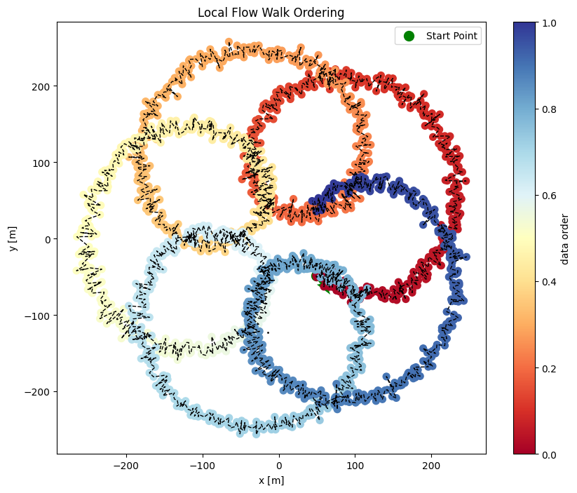
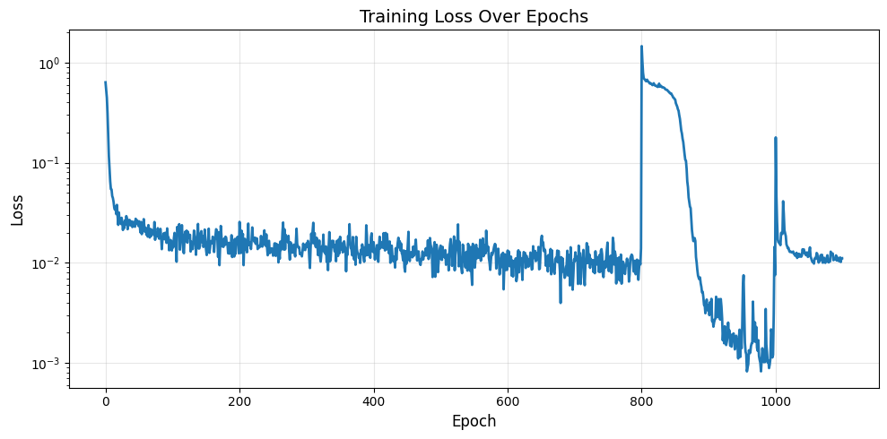
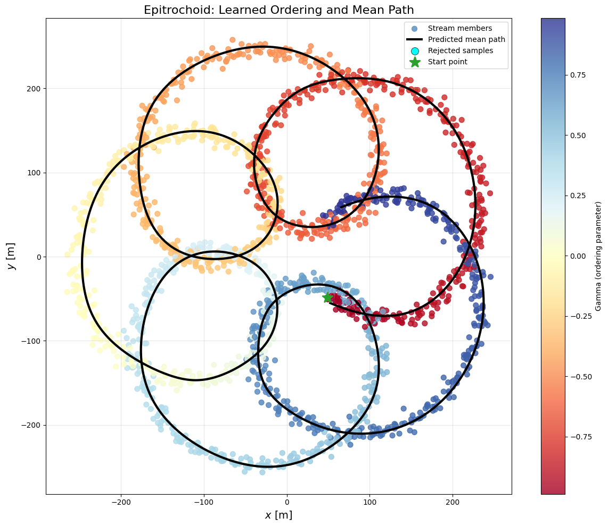

Learning an Epitrochoid with an Autoencoder#

A hard test case for ordering: a single curve that crosses itself many times. At every crossing, the nearest star may belong to a different part of the curve, so any method that orders by position alone will jump between strands. We order the curve with the local-flow walk, using velocities to stay on the right strand, then fit a smooth mean path with the autoencoder.
The curve is synthetic and in SI units (metres); only its shape matters. The stream autoencoder tutorial introduces the walk and the autoencoder on a simpler, realistic stream, and explains how to read the training loss; this one focuses on what changes for a self-crossing curve.
# On Colab, clone the repository, install the locked tutorial dependencies, and run
# from docs/tutorials. Elsewhere it does nothing: run from docs/tutorials with the
# `tutorials` extra.
import pathlib
import sys
repo = pathlib.Path("/content/phasecurvefit")
if "google.colab" in sys.modules:
%pip install -q uv
if not repo.exists():
!git clone -q --depth 1 https://github.com/GalacticDynamics/phasecurvefit {repo}
%cd {repo}
!uv export -q --frozen --extra tutorials --no-dev --no-editable --no-hashes -o r.txt
!uv pip install -q --system --python {sys.executable} -r r.txt
%cd docs/tutorials
import jax
import jax.random as jr
import matplotlib.pyplot as plt
import numpy as np
from scipy.spatial import cKDTree
import quaxed.numpy as jnp
import unxt as u
import phasecurvefit as pcf
key = jr.key(201030)
Data: Self-Intersecting Epitrochoid Curve#
We build a single stream that self-intersects using an epitrochoid curve that traces one continuous loop from 5° to 355°, leaving a 10° gap so the curve doesn’t close back on itself. The epitrochoid’s internal structure (5 loops within one outer rotation) creates multiple self-intersections along the path.
At the crossings, a purely spatial walk can jump to the other branch: the nearest neighbour may lie on a different strand. Including velocities in the distance fixes this: the strands cross in position but move in different directions, so with FullPhaseSpaceDistanceMetric (where metric_scale, a time, converts a velocity difference into an equivalent distance) a star on the other strand is far away in phase space, and the walk stays on its own strand.
The curve is parameterized by a scalar t, which we keep as ground truth but never show to the ordering.
usys = u.unitsystems.si
def make_self_intersecting_stream(
key,
*,
n: int,
noise_sigma=0.5,
scale=120.0,
R: float = 5.0,
r: float = 1.0,
d: float = 4.5,
):
"""Return (t, pos, vel) for an OPEN curve with self-intersections."""
# Epitrochoid parameters: ratio=5 means 5 internal loops per outer rotation
# Single outer rotation: 5° to 355° with 10° gap
t_start = 5.0 * jnp.pi / 180.0
t_end = 355.0 * jnp.pi / 180.0
t = jnp.linspace(t_start, t_end, n)
ratio = (R + r) / r # = 5 internal rotations per outer rotation
x0 = scale * ((R + r) * jnp.cos(t) - d * jnp.cos(ratio * t)) / 5.0
y0 = scale * ((R + r) * jnp.sin(t) - d * jnp.sin(ratio * t)) / 5.0
# Derivatives for velocity
dx0 = scale * (-(R + r) * jnp.sin(t) + d * ratio * jnp.sin(ratio * t)) / 5.0
dy0 = scale * ((R + r) * jnp.cos(t) - d * ratio * jnp.cos(ratio * t)) / 5.0
# Optional small positional noise
kx, ky = jr.split(key)
x = x0 + noise_sigma * jr.normal(kx, (n,))
y = y0 + noise_sigma * jr.normal(ky, (n,))
# Pack into unitful quantities
pos = {"x": u.Q(x, usys["length"]), "y": u.Q(y, usys["length"])}
vel = {"x": u.Q(dx0, usys["speed"]), "y": u.Q(dy0, usys["speed"])}
return t, pos, vel
key, subkey = jr.split(key)
t, pos, vel = make_self_intersecting_stream(
subkey,
n=2048,
noise_sigma=6,
)
fig, ax = plt.subplots(figsize=(6, 6))
ax.scatter(pos["x"], pos["y"], label="Curve", color="gray", alpha=0.7, s=10)
# Add velocity arrows every 10th point
every = 12
ax.quiver(
u.ustrip(usys, pos["x"][::every]),
u.ustrip(usys, pos["y"][::every]),
u.ustrip(usys, vel["x"][::every]),
u.ustrip(usys, vel["y"][::every]),
scale=10_000,
width=0.006,
alpha=0.6,
color="black",
)
ax.scatter(pos["x"][:1], pos["y"][:1], label="Start", color="green", s=50)
ax.scatter(pos["x"][-1:], pos["y"][-1:], label="End", color="red", s=50)
ax.legend()
ax.set(
aspect="equal",
title="Epitrochoid with Self-Intersections",
xlabel=f"x [{ax.get_xlabel()}]",
ylabel=f"y [{ax.get_ylabel()}]",
)
plt.show();

# Shuffle the data
key, subkey = jr.split(key)
order = jr.permutation(subkey, jnp.arange(len(t)))
qs = jax.tree.map(lambda x: x[order], pos)
ps = jax.tree.map(lambda x: x[order], vel)
Where does the walk start?#
The local-flow walk follows the velocity field from one observation to the next, so it has to begin at an end of the curve. Naming that index by hand means knowing the answer before you have ordered anything.
An MSTOrderer finds it instead: it orders along the graph diameter, tip to
tip, so its first observation is a genuine endpoint. Chaining with | hands
that index to the walk, which uses it when start_idx is left at its default
of None.
On this curve the MST has to sever anti-parallel edges (sever_cos_threshold)
or it short-circuits across the self-crossings and nominates the wrong tip.
Walk settings#
FullPhaseSpaceDistanceMetricmeasures distance in position and velocity, withmetric_scale(a time) converting velocity differences into distance. Speeds along this curve are 500–800 m/s, and where two strands cross their velocities differ by at least ~580 m/s. At 4 s that puts a star on the crossing strand more than 2 km away in phase space, against a typical spacing of ~3 m between neighbouring stars.max_dist=40 mstops the walk if its next step would be longer than that, over ten times the typical spacing between neighbouring stars.KDTree(k=60)only lets the walk step to one of the 60 spatially nearest stars, which keeps it local where strands pass close together.direction="forward": unlike a tidal stream, this curve’s velocity field runs the same way from one end to the other, so one forward walk from the starting tip covers it.
The walk’s path is the greedy route through the observations themselves, so
it carries their scatter. Chaining a SOMOrderer after it fits a lattice of
prototypes – each an average over many tracers – and re-orders by arc length
along a smooth backbone through them. That backbone, not a polyline through
noisy points, is what the fit below consumes.
The SOM picks up the walk’s velocity-awareness automatically: LocalFlowOrderer
steps along the flow, so its result is marked velocity-aware and the SOM uses a
phase-space metric rather than position alone. n_prototypes is raised to 60
because the smoothing length sigma_end * L / (n_prototypes - 1) must sit below
the petal structure; the default 25 is coarser than the petals and tangles the
ordering (SOMOrderer warns when it does).
# The walk needs to begin at an end of the curve. Rather than pick that index by
# hand, let an MSTOrderer find it: it orders along the graph diameter, tip to
# tip, so its first observation is an endpoint. Severing anti-parallel edges is
# what keeps it from short-circuiting across the crossings.
P = np.stack([np.asarray(u.ustrip(usys, qs[c])) for c in ("x", "y")], axis=1)
med = float(np.median(cKDTree(P).query(P, k=2)[0][:, 1]))
tipfinder = pcf.orderers.MSTOrderer(
k=16,
jump_cap=8.0 * med,
sever_cos_threshold=0.9,
orient_by_velocity=True,
on_disconnected="largest",
)
# Walk configuration
config = pcf.WalkConfig(
strategy=pcf.strats.KDTree(k=60),
metric=pcf.metrics.FullPhaseSpaceDistanceMetric(),
)
metric_scale = u.Q(4, "s")
max_dist = u.Q(40, "m")
# Perform walk
walkresult = pcf.order(
qs,
ps,
tipfinder
| pcf.orderers.LocalFlowOrderer(
metric_scale=metric_scale,
max_dist=max_dist,
config=config,
direction="forward",
)
| pcf.orderers.SOMOrderer(n_prototypes=60),
metadata=pcf.StateMetadata(usys=usys),
)
# The tip the chain picked, for the plots below.
start_idx = int(walkresult.ordering[0])
walkresult.gamma_range
(-1.0, 1.0)
fig, ax = plt.subplots(1, 1, figsize=(10, 8))
im = ax.scatter(qs["x"], qs["y"], s=1, c="k")
ax.scatter(
u.ustrip(usys, qs["x"][start_idx])[None],
u.ustrip(usys, qs["y"][start_idx])[None],
c="green",
s=100,
label="Start Point",
)
ax.quiver(
u.ustrip(usys, qs["x"][start_idx])[None],
u.ustrip(usys, qs["y"][start_idx])[None],
u.ustrip(usys, ps["x"][start_idx])[None],
u.ustrip(usys, ps["y"][start_idx])[None],
color="green",
)
ordering = walkresult.ordering
walk_qs = {k: v[ordering] for k, v in walkresult.positions.items()}
timeline = np.linspace(0, 1, len(ordering))
im = ax.scatter(walk_qs["x"], walk_qs["y"], s=50, c=timeline, cmap="RdYlBu")
ax.plot(walk_qs["x"], walk_qs["y"], c="k", lw=1, ls="--")
plt.colorbar(im, ax=ax, label="data order")
ax.set(
aspect="equal",
xlabel=f"x [{ax.get_xlabel()}]",
ylabel=f"y [{ax.get_ylabel()}]",
title="Local Flow Walk Ordering",
)
plt.legend()
plt.show();

What to look for: the colour should run smoothly from the start to the far end, following one strand through each crossing. A jump to the crossing strand would show up as a sudden colour change and a long dashed segment.
Fitting the mean path#
The autoencoder’s decoder has to bend sharply around five tight loops, so we give
it more capacity and time than the defaults: one more hidden layer
(track_depth=4, default 3) and twice as many decoder-only epochs
(n_epochs_decoder=200, default 100). To keep this page fast we halve the joint
phase (n_epochs_both=100, default 200), which leaves the track the same.
key, model_key, train_key = jr.split(key, 3)
normalizer = pcf.nn.StandardScalerNormalizer(qs, ps)
ae_model = pcf.nn.PathAutoencoder.make(
normalizer, track_depth=4, gamma_range=walkresult.gamma_range, key=model_key
)
train_config = pcf.nn.TrainingConfig(n_epochs_decoder=200, n_epochs_both=100)
result, opt_state, losses = pcf.nn.train_autoencoder(
ae_model, walkresult, key=train_key, config=train_config
)
As in the stream autoencoder tutorial, the curve below concatenates three training phases with different objectives (boundaries at epochs 800 and 1000), so values can only be compared within a phase.
# Plot training losses
fig, ax = plt.subplots(figsize=(10, 5))
ax.plot(np.asarray(losses), linewidth=2)
ax.set_xlabel("Epoch", fontsize=12)
ax.set_ylabel("Loss", fontsize=12)
ax.set_title("Training Loss Over Epochs", fontsize=14)
ax.set_yscale("log")
ax.grid(True, alpha=0.3)
plt.tight_layout()
plt.show()
print(f"Final loss: {losses[-1]:.6f}")

Final loss: 0.011120
fig, ax = plt.subplots(figsize=(12, 10))
# Use the trained model from the result
all_gamma, all_probs = result.model.encode(walkresult.positions, walkresult.velocities)
rejected_membership = all_probs < train_config.member_threshold
qs_pred = result(jnp.linspace(*result.track_range, 1_000))
# Plot all points with gradient coloring
im = ax.scatter(
u.ustrip(usys, qs["x"]),
u.ustrip(usys, qs["y"]),
s=50,
c=np.asarray(all_gamma),
cmap="RdYlBu",
alpha=0.8,
label="Stream members",
)
# Plot predicted mean path
ax.plot(
u.ustrip(usys, qs_pred["x"]),
u.ustrip(usys, qs_pred["y"]),
c="k",
lw=3,
label="Predicted mean path",
)
# Mark rejected samples in cyan
ax.scatter(
u.ustrip(usys, qs["x"][rejected_membership]),
u.ustrip(usys, qs["y"][rejected_membership]),
s=100,
c="cyan",
alpha=1.0,
marker="o",
edgecolors="black",
linewidths=0.5,
label="Rejected samples",
)
# Mark start point
ax.scatter(
u.ustrip(usys, qs["x"][start_idx]),
u.ustrip(usys, qs["y"][start_idx]),
s=200,
c="tab:green",
marker="*",
label="Start point",
linewidths=2,
zorder=5,
)
ax.set_xlabel(r"$x$ [m]", fontsize=14)
ax.set_ylabel(r"$y$ [m]", fontsize=14)
ax.set_title("Epitrochoid: Learned Ordering and Mean Path", fontsize=16)
fig.colorbar(im, ax=ax, label="Gamma (ordering parameter)")
ax.legend(loc="upper right", fontsize=10)
ax.grid(True, alpha=0.3)
plt.tight_layout()
plt.show();

What to look for: the path should trace every loop and follow the stars through each crossing. Compare it with the running-mean path on the same data, which is much faster to fit but cuts inside the loops.
Takeaways#
On a self-crossing curve, velocities are what keep the ordering on the right strand: here through
FullPhaseSpaceDistanceMetricin the walk.An
MSTOrdererchained in front of the walk (tipfinder | walk) finds the starting tip automatically.Harder shapes need a more capable decoder;
track_depthand the epoch counts are the first things to raise. The epitrochoid MST tutorial swaps in a Fourier-feature decoder for the same curve.